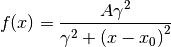
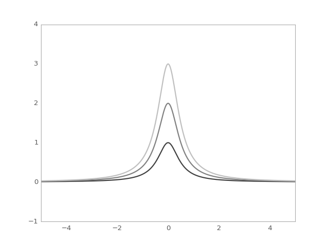

Lorentz1D¶
-
class
astropy.modeling.functional_models.Lorentz1D(amplitude=1, x_0=0, fwhm=1, **kwargs) [edit on github][source]¶ Bases:
astropy.modeling.Fittable1DModelOne dimensional Lorentzian model.
Parameters: amplitude : float
Peak value
x_0 : float
Position of the peak
fwhm : float
Full width at half maximum
Other Parameters: fixed : a dict
A dictionary
{parameter_name: boolean}of parameters to not be varied during fitting. True means the parameter is held fixed. Alternatively thefixedproperty of a parameter may be used.tied : dict
A dictionary
{parameter_name: callable}of parameters which are linked to some other parameter. The dictionary values are callables providing the linking relationship. Alternatively thetiedproperty of a parameter may be used.bounds : dict
eqcons : list
A list of functions of length
nsuch thateqcons[j](x0,*args) == 0.0in a successfully optimized problem.ineqcons : list
A list of functions of length
nsuch thatieqcons[j](x0,*args) >= 0.0is a successfully optimized problem.See also
Notes
Model formula:

Examples
import numpy as np import matplotlib.pyplot as plt from astropy.modeling.models import Lorentz1D plt.figure() s1 = Lorentz1D() r = np.arange(-5, 5, .01) for factor in range(1, 4): s1.amplitude = factor plt.plot(r, s1(r), color=str(0.25 * factor), lw=2) plt.axis([-5, 5, -1, 4]) plt.show()
(Source code, png, hires.png, pdf)
Attributes Summary
amplitudefwhmparam_namesx_0Methods Summary
evaluate(x, amplitude, x_0, fwhm)One dimensional Lorentzian model function fit_deriv(x, amplitude, x_0, fwhm)One dimensional Lorentzian model derivative with respect to parameters Attributes Documentation
-
amplitude¶
-
fwhm¶
-
param_names= ('amplitude', 'x_0', 'fwhm')¶
-
x_0¶
Methods Documentation
-
static
evaluate(x, amplitude, x_0, fwhm) [edit on github][source]¶ One dimensional Lorentzian model function
-
static
fit_deriv(x, amplitude, x_0, fwhm) [edit on github][source]¶ One dimensional Lorentzian model derivative with respect to parameters
-
{kind=link}
{kind=link}